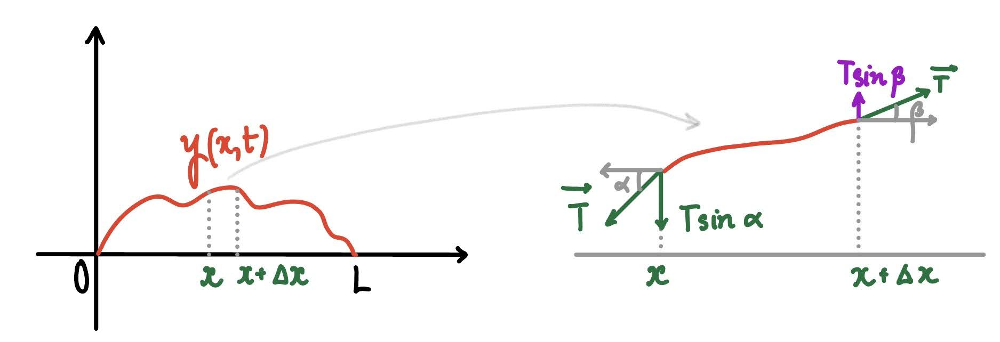

Goal: Derive and solve the one-dimensional wave equation.
1. Derivation of the One-Dimensional Wave Equation
Historical Remark:
Although Fourier systematized the method of separation of variables, trigonometric series solutions to partial differential equations appeared earlier in the work of Euler, d’Alembert, and Daniel Bernoulli in the study of vibrating strings.
Physical Model:
We consider a flexible, uniform string stretched between two fixed points \( x = 0 \) and \( x = L \), under tension \( T \). Let \( \rho \) denote the linear density of the string.
The vertical displacement of the string is described by \( y(x,t) \), where each point of the string moves only in the vertical direction.
- \( x \): position along the string
- \( t \): time
- \( y(x,t) \): vertical displacement
Key Assumptions:
- Motion is purely transverse (vertical only).
- Small deflection assumption:
\[ \sin\theta \approx \tan\theta = y_x(x,t) \]
- Tension \( T \) is constant along the string. The tension force acts tangentially along the string.

A string of length L is shown with displacement y(x,t) from the horizontal axis. A small segment between x and x+Δx is highlighted. At each end of the segment, tension forces act tangentially to the string with equal magnitude T but different angles (α at x and β at x+Δx). The vertical components T sin(α) and T sin(β) are shown, illustrating how the difference in these forces leads to the motion of the string.
Consider a small segment of the string on \( [x, x + \Delta x] \) with mass \( \rho \Delta x \).
Newton’s Second Law:
The vertical acceleration is:
The net vertical force comes from the difference of tension components at the endpoints.
Derivation:
The forces acting on the small segment of the string on \( [x, x+\Delta x] \) come only from the tension \( T \) at the two endpoints.
Example: At the left endpoint \( x \), the string exerts a downward vertical component of tension \( T \sin\alpha \), and at the right endpoint \( x+\Delta x \), there is an upward vertical component \( T \sin\beta \).
Hence the net vertical force is:
Applying Newton’s second law, we get:
For small deflections, we use the approximation:
Therefore,
Substituting into Newton’s law:
Divide both sides by \( \rho \Delta x \):
Now take the limit as \( \Delta x \to 0 \). Since
we obtain the one-dimensional wave equation:
2. Initial–Boundary Value Problem
Wave Equation:
Boundary Conditions:
Initial Conditions:
Decomposition Idea (this is optional):
We can use a “divide and conquer” strategy and split the problem into two simpler problems, each involving only a single nonhomogeneous boundary condition.
Problem A:
Problem B:
The full solution to the original problem is:
We verify this using the linearity of the wave equation.
1. PDE check:
Since differentiation is linear, if \( y_A \) and \( y_B \) satisfy \( y_{tt} = a^2 y_{xx} \), then:
Hence,
2. Boundary conditions:
Both \( y_A \) and \( y_B \) satisfy: \( y(0,t)=0 \), \( y(L,t)=0 \).
3. Initial conditions:
Conclusion: Therefore, the sum
3. Solution by Separation of Variables
Step 1: Separation of variables
We assume a product solution of the form:
Step 2: Substitute into the PDE
Step 3: Separate variables
This gives two ordinary differential equations:
Step 4: Apply boundary conditions and solve the eigenvalue problem
From separation of variables we obtained:
We now determine possible values of \( \lambda \) by considering three cases.
Case 1: \( \lambda = 0 \)
Applying boundary conditions:
Hence only the trivial solution exists.
Case 2: \( \lambda < 0 \)
Let \( \lambda = -\mu^2 \), where \( \mu > 0 \). Then the ODE becomes:
The general solution is:
Apply the boundary condition \( X(0)=0 \):
Hence,
Now apply the second boundary condition \( X(L)=0 \):
Since \( e^{\mu L} - e^{-\mu L} \neq 0 \), we must have:
Therefore \( X(x) \equiv 0 \), so only the trivial solution exists.
Case 3: \( \lambda > 0 \)
Let \( \lambda = \mu^2 \), \( \mu > 0 \). Then:
Apply boundary conditions:
So:
Now apply \( X(L)=0 \):
Therefore:
and eigenfunctions:
Conclusion:
Only the case \( \lambda > 0 \) produces nontrivial solutions satisfying the boundary conditions.
Step 5: Time-dependent part
which gives oscillatory solutions:
Step 6: Combine solutions
We haveStep 7: Apply initial conditions
We now determine the coefficients using both initial conditions.
First initial condition:
Substituting \( t=0 \) into the series:
Hence,
So \( A_n \) are the Fourier sine coefficients of \( f(x) \):
Second initial condition:
Differentiate the series with respect to \( t \):
Evaluate at \( t=0 \):
Hence,
So \( B_n \dfrac{a n \pi}{L} \) are the Fourier sine coefficients of \( g(x) \):
Therefore, \( B_n \) are given by:
Step 8: Conclusion:
4. Summary: Solution of the Wave Equation
Wave Equation:
Boundary Conditions:
Initial Conditions:
Solution:
Coefficients: Determined from initial conditions \( f(x), g(x) \).
Remark: If \(f(x) = 0\), then \(A_n = 0\) for all \(n\). If \(g(x) = 0\), then \(B_n = 0\) for all \(n\).
5. The d’Alembert Solution
The d’Alembert form of the solution of Problem A
Remark: The d’Alembert form of the solution of Problem A for the vibrating string.
Problem A:
Step 1: Fourier series solution
From separation of variables, the solution can be written as
Step 2: Trigonometric identity
We use the identity
with
Then each term becomes
Step 3: Rewriting the solution
Substituting into the series gives
Let \(F(x)\) be the Fourier sine series of \(f(x)\)
We then have
Here the function \(F(x)\) is interpreted as the odd periodic extension of the initial displacement \(f(x)\), with period \(2L\).
Step 4: d’Alembert form
We obtain the d’Alembert representation:
This shows that the solution is a superposition of two traveling waves:
- \(F(x-at)\): wave moving to the right
- \(F(x+at)\): wave moving to the left
Interpretation
Any initial profile splits into two waves traveling in opposite directions with speed \(a\). This is why the equation \(y_{tt} = a^2 y_{xx}\) is called the wave equation.
The d’Alembert form of the solution of Problem B
Problem B:
Let \(G(x)\) be the odd periodic extension of \(g(x)\) with period \(2L\). Define the function \(H(x)\) by
The solution of Problem B is given by
The d’Alembert form of the solution of the Original Problem
Original Problem:
Let \(F(x)\) be the odd periodic extension of the initial displacement \(f(x)\), and let \(G(x)\) be the odd periodic extension of the initial velocity \(g(x)\), both with period \(2L\). Define
Final d’Alembert Solution:
Interpretation
The solution is a superposition of four traveling waves: two originating from the initial displacement \(f(x)\), and two originating from the initial velocity \(g(x)\), all propagating with speed \(a\).
6. Examples
Example 6.1
Solve the wave equation
subject to boundary conditions
and initial conditions
Solution:
Step 1: Expand the initial condition
Use the identity
Hence,
Step 2: General solution form
Step 3: Apply initial velocity condition
Step 4: Match initial displacement
Comparing coefficients gives:
Final solution:
Example 6.2: Sudden Impact on a String
A guitar string lies across the back of a pickup truck. At time \(t = 0\), the truck suddenly slams into a brick wall with speed \(v_0\), producing an instantaneous uniform vertical velocity along the entire string. Determine the resulting displacement \(y(x,t)\) of the string for \(0 < x < L,\; t > 0\), assuming both ends are fixed.
Solution:
The wave equation is
with boundary conditions
and initial conditions
Using separation of variables, we seek a Fourier sine series solution of the form
Differentiating with respect to \(t\) and applying the initial velocity condition gives
Hence the Fourier sine coefficients are
Evaluating the integral gives
Final Answer:
Example 6.3
Solve the following boundary value problem:
Final Answer:
Example 6.4
Solve the following boundary value problem:
Final Answer:
Example 6.5
Solve the following boundary value problem:
Final Answer:
Example 6.6
Solve the following boundary value problem:
Final Answer:
Example 6.9
The solution to the wave equation
is given by
for constants \(c_n\) and \(d_n\), \(n \geq 1\). Find \(c_n\).
-
\[ \boxed{\displaystyle \frac{2}{n\pi}\int_0^5 (3-x) \sin \left( \frac{n\pi x}{5} \right)\,dx} \]
-
\[ \frac{2}{5}\int_0^5 (2x) \sin \left( \frac{n\pi x}{5} \right)\,dx \]
-
\[ \frac{2}{n\pi}\int_0^5 (2x) \sin \left( \frac{n\pi x}{5} \right)\,dx \]
-
\[ \frac{2}{5}\int_0^5 (3-x) \sin \left( \frac{n\pi x}{5} \right)\,dx \]
-
\[ \frac{2}{n\pi}\int_0^5 (3-x) \cos \left( \frac{n\pi x}{5} \right)\,dx \]
Example 6.8: Wave Equation with Mixed Boundary Conditions
Consider a stretched string of length \(L\), initially at rest. The displacement \(y(x,t)\) satisfies the wave equation with one fixed end and one free (sliding) end:
The boundary conditions are:
and the initial conditions are:
Use the method of separation of variables to derive the solution
where the coefficients \(A_n\) are given by
We solve this using separation of variables.
1. Separation of variables
Assume a product solution \(y(x,t)=X(x)T(t)\). Substituting into the PDE gives:
Divide by \(a^2XT\):
This leads to two ODEs:
2. Spatial eigenvalue problem
We consider different cases for \(\lambda\):
Case 1: \(\lambda = 0\)
Apply boundary conditions: \(X(0)=0 \Rightarrow A=0\), and \(X'(L)=0 \Rightarrow B=0\). Hence only the trivial solution \(X \equiv 0\).
Case 2: \(\lambda < 0\)
Let \(\lambda = -\mu^2\), where \(\mu > 0\). Then:
Applying the boundary conditions again forces \(A=B=0\), giving only the trivial solution.
Case 3: \(\lambda > 0\)
Let \(\lambda=k^2\). Then:
General solution:
Apply boundary conditions:
At \(x=0\):
So:
At \(x=L\):
For nontrivial solutions:
Hence the eigenfunctions are:
3. Time equation
For each \(n\), the time equation becomes:
The general solution is:
Using \(y_t(x,0)=0\), we get \(D_n=0\).
4. Full solution
Hence each solution (building block) is:
By superposition, the general solution is obtained by summing over all odd integers \(n\):
5. Coefficients
From \(y(x,0)=f(x)\), we obtain:
This is a Fourier sine series expansion of \(f(x)\) on \((0,L)\). Hence
Example 6.9:
A string of length \(\pi\) is fixed at the left end and the right end is allowed to move vertically but not horizontally, so
The tension and density are such that \(a^2=1\), giving the wave equation:
The string has initial displacement \(f(x)=x\), \(0 \le x \le \pi\), and no initial velocity. The solution can be written as:
where \(c_n\) are constants determined by the initial condition. Find \(T_n(t)\).
-
\[ \boxed{T_n(t)=\cos\left(\frac{2n-1}{2}t\right)} \]
-
\[ T_n(t)=\sinh\left(\frac{2n-1}{2}t\right) \]
-
\[ T_n(t)=\sin\left(\frac{2n-1}{2}t\right) \]
-
\[ T_n(t)=\cos(nt) \]
-
\[ T_n(t)=\sin(nt) \]
Example 10: The d’Alembert solution (an alternate method)
Part 1: Suppose that the function \(F\) is twice differentiable for all \(x\). Use the chain rule to verify that \(F(x+at)\) and \(F(x-at)\) are solutions to the wave equation
Part 2: Let \(F\) be the odd periodic extension of the initial displacement \(f(x)\) with period \(2L\). Verify that the solution
Solution:
Part 1: Verification via Chain Rule
Let \(u = x+at\). By the chain rule:
Substituting into the wave equation gives \(a^2F''(u) = a^2(F''(u))\), confirming it is a solution. The verification for \(F(x-at)\) follows the same logic.
Part 2: Verification of Conditions
Given
- Boundary Conditions:
Due to odd symmetry
\[ y(0,t) = \frac{1}{2}[F(-at) + F(at)] = 0 \]and similarly for \(x=L\).
- Initial Displacement:
\[ y(x,0) = \frac{1}{2}[F(x) + F(x)] = F(x) = f(x), \quad \forall x \in (0,L). \]
- Initial Velocity:
\[y_t(x,t) = \frac{1}{2}[-aF'(x-at) + aF'(x+at)\]At \(t=0\),\[y_t(x,0) = \frac{1}{2}[-aF'(x) + aF'(x)] = 0\]
Example 11: The d’Alembert solution
A vibrating string of length \(L=\pi\) is fixed at both ends and released from rest at time \(t=0\). Its initial displacement is given by
The motion of the string satisfies the wave equation
with boundary conditions \(y(0,t)=y(\pi,t)=0\), and zero initial velocity: \(y_t(x,0)=0\).
- Find the odd periodic extension \(F(x)\) of \(f(x)\) with period \(2\pi\).
- Use the d’Alembert’s formula to determine the displacement \(y(x,t)\) of the string.
- Evaluate and graph the displacement \(y(x,t)\) at \(t=\frac{\pi}{4}\).
Solution:
1. Odd Periodic Extension \(F(x)\)To satisfy the boundary conditions \(y(0,t)=y(\pi,t)=0\), we extend \(f(x)=1-\cos(2x)\) as an odd function, then periodically with period \(2\pi\). For \(x \in [-\pi, 0]\), we use the odd property \(F(x) = -f(-x)\).
With wave speed \(a=1\) and zero initial velocity \(y_t(x,0)=0\), the general solution simplifies to the superposition of two traveling waves:
Substituting \(t=\frac{\pi}{4}\) into the formula gives:
The first term, \(\frac{1}{2}F(x-\frac{\pi}{4})\), shifts the wave to the right, and the second term, \(\frac{1}{2}F(x+\frac{\pi}{4})\), shifts it to the left. The total displacement is the sum of these two components.
Vibrating String
Practice Problems
Solve the following boundary value problems:
-
\[ y_{tt} = 4y_{xx}, \quad 0 < x < \pi, \quad t > 0; \quad y(0,t) = y(\pi,t) = 0, \quad y(x,0) = \frac{1}{10} \sin 2x, \quad y_t(x,0) = 0 \]
-
\[ y_{tt} = y_{xx}, \quad 0 < x < 1, \quad t > 0; \quad y(0,t) = y(1,t) = 0, \quad y(x,0) = \frac{1}{10} \sin \pi x - \frac{1}{20} \sin 3\pi x, \quad y_t(x,0) = 0 \]
-
\[ 4y_{tt} = y_{xx}, \quad 0 < x < \pi, \quad t > 0; \quad y(0,t) = y(\pi,t) = 0, \quad y(x,0) = y_t(x,0) = \frac{1}{10} \sin x \]
-
\[ 4y_{tt} = y_{xx}, \quad 0 < x < 2, \quad t > 0; \quad y(0,t) = y(2,t) = 0, \quad y(x,0) = \frac{1}{5} \sin \pi x \cos \pi x, \quad y_t(x,0) = 0 \]
-
\[ y_{tt} = 25y_{xx}, \quad 0 < x < 3, \quad t > 0; \quad y(0,t) = y(3,t) = 0, \quad y(x,0) = \frac{1}{4} \sin \pi x, \quad y_t(x,0) = 10 \sin 2\pi x \]
-
\[ y_{tt} = 100y_{xx}, \quad 0 < x < \pi, \quad t > 0; \quad y(0,t) = y(\pi,t) = 0, \quad y(x,0) = x(\pi - x), \quad y_t(x,0) = 0 \]
-
\[ y_{tt} = 100y_{xx}, \quad 0 < x < 1, \quad t > 0; \quad y(0,t) = y(1,t) = 0, \quad y(x,0) = 0, \quad y_t(x,0) = x \]
-
\[ y_{tt} = 4y_{xx}, \quad 0 < x < 1, \quad t > 0; \quad y(0,t) = y(1,t) = 0, \quad y(x,0) = 0, \quad y_t(x,0) = x(1 - x) \]